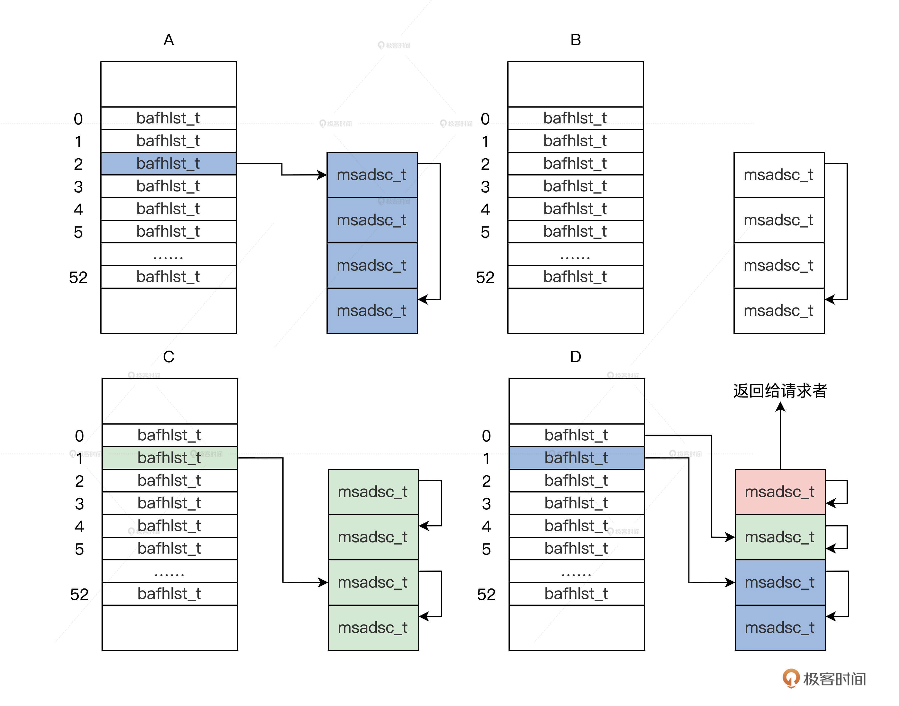

- 00 开篇词 为什么要学写一个操作系统？.md.html
- 00 编辑手记 升级认知，迭代自己的操作系统.md.html
- 01 程序的运行过程：从代码到机器运行.md.html
- 02 几行汇编几行C：实现一个最简单的内核.md.html
- 03 黑盒之中有什么：内核结构与设计.md.html
- 04 震撼的Linux全景图：业界成熟的内核架构长什么样？.md.html
- 05 CPU工作模式：执行程序的三种模式.md.html
- 06 虚幻与真实：程序中的地址如何转换？.md.html
- 07 Cache与内存：程序放在哪儿？.md.html
- 08 锁：并发操作中，解决数据同步的四种方法.md.html
- 09 瞧一瞧Linux：Linux的自旋锁和信号量如何实现？.md.html
- 10 设置工作模式与环境（上）：建立计算机.md.html
- 11 设置工作模式与环境（中）：建造二级引导器.md.html
- 12 设置工作模式与环境（下）：探查和收集信息.md.html
- 13 第一个C函数：如何实现板级初始化？.md.html
- 14 Linux初始化（上）：GRUB与vmlinuz的结构.md.html
- 15 Linux初始化（下）：从_start到第一个进程.md.html
- 16 划分土地（上）：如何划分与组织内存？.md.html
- 17 划分土地（中）：如何实现内存页面初始化？.md.html
- 18 划分土地（下）：如何实现内存页的分配与释放？.md.html
- 19 土地不能浪费：如何管理内存对象？.md.html
- 20 土地需求扩大与保障：如何表示虚拟内存？.md.html
- 21 土地需求扩大与保障：如何分配和释放虚拟内存？.md.html
- 22 瞧一瞧Linux：伙伴系统如何分配内存？.md.html
- 23 瞧一瞧Linux：SLAB如何分配内存？.md.html
- 24 活动的描述：到底什么是进程？.md.html
- 25 多个活动要安排（上）：多进程如何调度？.md.html
- 26 多个活动要安排（下）：如何实现进程的等待与唤醒机制？.md.html
- 27 瞧一瞧Linux：Linux如何实现进程与进程调度_.md.html
- 28 部门分类：如何表示设备类型与设备驱动？.md.html
- 29 部门建立：如何在内核中注册设备？.md.html
- 30 部门响应：设备如何处理内核I_O包？.md.html
- 31 瞧一瞧Linux：如何获取所有设备信息？.md.html
- 32 仓库结构：如何组织文件_.md.html
- 33 仓库划分：文件系统的格式化操作.md.html
- 34 仓库管理：如何实现文件的六大基本操作？.md.html
- 35 瞧一瞧Linux：虚拟文件系统如何管理文件？.md.html
- 36 从URL到网卡：如何全局观察网络数据流动？.md.html
- 37 从内核到应用：网络数据在内核中如何流转.md.html
- 38 从单排到团战：详解操作系统的宏观网络架构.md.html
- 39 瞧一瞧Linux：详解socket实现与网络编程接口.md.html
- 40 瞧一瞧Linux：详解socket的接口实现.md.html
- 41 服务接口：如何搭建沟通桥梁？.md.html
- 42 瞧一瞧Linux：如何实现系统API？.md.html
- 43 虚拟机内核：KVM是什么？.md.html
- 44 容器：如何理解容器的实现机制？.md.html
- 45 ARM新宠：苹果的M1芯片因何而快？.md.html
- 46 AArch64体系：ARM最新编程架构模型剖析.md.html
- LMOS来信：第二季课程带你“手撕”计算机基础.md.html
- 大咖助场 以无法为有法，以无限为有限.md.html
- 用户故事 yiyang：我的上机实验“爬坑指南”.md.html
- 用户故事 成为面向“知识库”的工程师.md.html
- 用户故事 技术人如何做选择，路才越走越宽？.md.html
- 用户故事 操作系统发烧友：看不懂？因为你没动手.md.html
- 用户故事 用好动态调试，助力课程学习.md.html
- 用户故事 艾同学：路虽远，行则将至.md.html
- 结束语 生活可以一地鸡毛，但操作系统却是心中的光.md.html
- 捐赠
18 划分土地（下）：如何实现内存页的分配与释放？
你好，我是LMOS。
通过前面两节课的学习，我们已经组织好了内存页，也初始化了内存页和内存区。我们前面做了这么多准备工作，就是为了实现分配和释放内存页面，达到内存管理的目的。
那有了前面的基础，我想你自己也能大概实现这个分配和释放的代码。但是，根据前面我们设计的数据结构和对其初始化的工作，估计你也可以隐约感觉到，我们的内存管理的算法还是有一点点难度的。
今天这节课，就让我们一起来实现这项富有挑战性的任务吧！这节课的配套代码，你可以通过这里下载。
内存页的分配
如果让你实现一次只分配一个页面，我相信这个问题很好解决，因为你只需要写一段循环代码，在其中遍历出一个空闲的msadsc_t结构，就可以返回了，这个算法就可以结束了。
但现实却不容许我们这么简单地处理问题，我们内存管理器要为内核、驱动，还有应用提供服务，它们对请求内存页面的多少、内存页面是不是连续，内存页面所处的物理地址都有要求。
这样一来，问题就复杂了。不过你也不必担心，我们可以从内存分配的接口函数下手。
下面我们根据上述要求来设计实现内存分配接口函数。我们还是先来建立一个新的C语言代码文件，在cosmos/hal/x86目录中建立一个memdivmer.c文件，在其中写一个内存分配接口函数，代码如下所示。
//内存分配页面框架函数
msadsc_t *mm_divpages_fmwk(memmgrob_t *mmobjp, uint_t pages, uint_t *retrelpnr, uint_t mrtype, uint_t flgs)
{
//返回mrtype对应的内存区结构的指针
memarea_t *marea = onmrtype_retn_marea(mmobjp, mrtype);
if (NULL == marea)
{
*retrelpnr = 0;
return NULL;
}
uint_t retpnr = 0;
//内存分配的核心函数
msadsc_t *retmsa = mm_divpages_core(marea, pages, &retpnr, flgs);
if (NULL == retmsa)
{
*retrelpnr = 0;
return NULL;
}
*retrelpnr = retpnr;
return retmsa;
}
//内存分配页面接口
//mmobjp->内存管理数据结构指针
//pages->请求分配的内存页面数
//retrealpnr->存放实际分配内存页面数的指针
//mrtype->请求的分配内存页面的内存区类型
//flgs->请求分配的内存页面的标志位
msadsc_t *mm_division_pages(memmgrob_t *mmobjp, uint_t pages, uint_t *retrealpnr, uint_t mrtype, uint_t flgs)
{
if (NULL == mmobjp || NULL == retrealpnr || 0 == mrtype)
{
return NULL;
}
uint_t retpnr = 0;
msadsc_t *retmsa = mm_divpages_fmwk(mmobjp, pages, &retpnr, mrtype, flgs);
if (NULL == retmsa)
{
*retrealpnr = 0;
return NULL;
}
*retrealpnr = retpnr;
return retmsa;
}
我们内存管理代码的结构是：接口函数调用框架函数，框架函数调用核心函数。可以发现，这个接口函数返回的是一个msadsc_t结构的指针，如果是多个页面返回的就是起始页面对应的msadsc_t结构的指针。
为什么不直接返回内存的物理地址呢？因为我们物理内存管理器是最底层的内存管理器，而上层代码中可能需要页面的相关信息，所以直接返回页面对应msadsc_t结构的指针。
还有一个参数是用于返回实际分配的页面数的。比如，内核功能代码请求分配三个页面，我们的内存管理器不能分配三个页面，只能分配两个或四个页面，这时内存管理器就会分配四个页面返回，retrealpnr指向的变量中就存放数字4，表示实际分配页面的数量。
有了内存分配接口、框架函数，下面我们来实现内存分配的核心函数，代码如下所示。
bool_t onmpgs_retn_bafhlst(memarea_t *malckp, uint_t pages, bafhlst_t **retrelbafh, bafhlst_t **retdivbafh)
{
//获取bafhlst_t结构数组的开始地址
bafhlst_t *bafhstat = malckp->ma_mdmdata.dm_mdmlielst;
//根据分配页面数计算出分配页面在dm_mdmlielst数组中下标
sint_t dividx = retn_divoder(pages);
//从第dividx个数组元素开始搜索
for (sint_t idx = dividx; idx < MDIVMER_ARR_LMAX; idx++)
{
//如果第idx个数组元素对应的一次可分配连续的页面数大于等于请求的页面数，且其中的可分配对象大于0则返回
if (bafhstat[idx].af_oderpnr >= pages && 0 < bafhstat[idx].af_fobjnr)
{
//返回请求分配的bafhlst_t结构指针
*retrelbafh = &bafhstat[dividx];
//返回实际分配的bafhlst_t结构指针
*retdivbafh = &bafhstat[idx];
return TRUE;
}
}
*retrelbafh = NULL;
*retdivbafh = NULL;
return FALSE;
}
msadsc_t *mm_reldivpages_onmarea(memarea_t *malckp, uint_t pages, uint_t *retrelpnr)
{
bafhlst_t *retrelbhl = NULL, *retdivbhl = NULL;
//根据页面数在内存区的m_mdmlielst数组中找出其中请求分配页面的bafhlst_t结构（retrelbhl）和实际要在其中分配页面的bafhlst_t结构(retdivbhl)
bool_t rets = onmpgs_retn_bafhlst(malckp, pages, &retrelbhl, &retdivbhl);
if (FALSE == rets)
{
*retrelpnr = 0;
return NULL;
}
uint_t retpnr = 0;
//实际在bafhlst_t结构中分配页面
msadsc_t *retmsa = mm_reldpgsdivmsa_bafhl(malckp, pages, &retpnr, retrelbhl, retdivbhl);
if (NULL == retmsa)
{
*retrelpnr = 0;
return NULL;
}
*retrelpnr = retpnr;
return retmsa;
}
msadsc_t *mm_divpages_core(memarea_t *mareap, uint_t pages, uint_t *retrealpnr, uint_t flgs)
{
uint_t retpnr = 0;
msadsc_t *retmsa = NULL;
cpuflg_t cpuflg;
//内存区加锁
knl_spinlock_cli(&mareap->ma_lock, &cpuflg);
if (DMF_RELDIV == flgs)
{
//分配内存
retmsa = mm_reldivpages_onmarea(mareap, pages, &retpnr);
goto ret_step;
}
retmsa = NULL;
retpnr = 0;
ret_step:
//内存区解锁
knl_spinunlock_sti(&mareap->ma_lock, &cpuflg);
*retrealpnr = retpnr;
return retmsa;
}
很明显，上述代码中onmpgs_retn_bafhlst函数返回的两个bafhlst_t结构指针，若是相等的，则在mm_reldpgsdivmsa_bafhl函数中很容易处理，只要取出bafhlst_t结构中对应的msadsc_t结构返回就好了。
问题是很多时候它们不相等，这就要分隔连续的msadsc_t结构了，下面我们通过mm_reldpgsdivmsa_bafhl这个函数来处理这个问题，代码如下所示。
bool_t mrdmb_add_msa_bafh(bafhlst_t *bafhp, msadsc_t *msastat, msadsc_t *msaend)
{
//把一段连续的msadsc_t结构加入到它所对应的bafhlst_t结构中
msastat->md_indxflgs.mf_olkty = MF_OLKTY_ODER;
msastat->md_odlink = msaend;
msaend->md_indxflgs.mf_olkty = MF_OLKTY_BAFH;
msaend->md_odlink = bafhp;
list_add(&msastat->md_list, &bafhp->af_frelst);
bafhp->af_mobjnr++;
bafhp->af_fobjnr++;
return TRUE;
}
msadsc_t *mm_divpages_opmsadsc(msadsc_t *msastat, uint_t mnr)
{ //单个msadsc_t结构的情况
if (mend == msastat)
{//增加msadsc_t结构中分配计数，分配标志位设置为1
msastat->md_indxflgs.mf_uindx++;
msastat->md_phyadrs.paf_alloc = PAF_ALLOC;
msastat->md_indxflgs.mf_olkty = MF_OLKTY_ODER;
msastat->md_odlink = mend;
return msastat;
}
msastat->md_indxflgs.mf_uindx++;
msastat->md_phyadrs.paf_alloc = PAF_ALLOC;
//多个msadsc_t结构的情况下，末端msadsc_t结构也设置已分配状态
mend->md_indxflgs.mf_uindx++;
mend->md_phyadrs.paf_alloc = PAF_ALLOC;
msastat->md_indxflgs.mf_olkty = MF_OLKTY_ODER;
msastat->md_odlink = mend;
return msastat;
}
bool_t mm_retnmsaob_onbafhlst(bafhlst_t *bafhp, msadsc_t **retmstat, msadsc_t **retmend)
{
//取出一个msadsc_t结构
msadsc_t *tmp = list_entry(bafhp->af_frelst.next, msadsc_t, md_list);
//从链表中删除
list_del(&tmp->md_list);
//减少bafhlst_t结构中的msadsc_t计数
bafhp->af_mobjnr--;
bafhp->af_fobjnr--;
//返回msadsc_t结构
*retmstat = tmp;
//返回当前msadsc_t结构连续的那个结尾的msadsc_t结构
*retmend = (msadsc_t *)tmp->md_odlink;
if (MF_OLKTY_BAFH == tmp->md_indxflgs.mf_olkty)
{//如果只单个msadsc_t结构，那就是它本身
*retmend = tmp;
}
return TRUE;
}
msadsc_t *mm_reldpgsdivmsa_bafhl(memarea_t *malckp, uint_t pages, uint_t *retrelpnr, bafhlst_t *relbfl, bafhlst_t *divbfl)
{
msadsc_t *retmsa = NULL;
bool_t rets = FALSE;
msadsc_t *retmstat = NULL, *retmend = NULL;
//处理相等的情况
if (relbfl == divbfl)
{
//从bafhlst_t结构中获取msadsc_t结构的开始与结束地址
rets = mm_retnmsaob_onbafhlst(relbfl, &retmstat, &retmend);
//设置msadsc_t结构的相关信息表示已经删除
retmsa = mm_divpages_opmsadsc(retmstat, relbfl->af_oderpnr);
//返回实际的分配页数
*retrelpnr = relbfl->af_oderpnr;
return retmsa;
}
//处理不等的情况
//从bafhlst_t结构中获取msadsc_t结构的开始与结束地址
rets = mm_retnmsaob_onbafhlst(divbfl, &retmstat, &retmend);
uint_t divnr = divbfl->af_oderpnr;
//从高bafhlst_t数组元素中向下遍历
for (bafhlst_t *tmpbfl = divbfl - 1; tmpbfl >= relbfl; tmpbfl--)
{
//开始分割连续的msadsc_t结构，把剩下的一段连续的msadsc_t结构加入到对应该bafhlst_t结构中
if (mrdmb_add_msa_bafh(tmpbfl, &retmstat[tmpbfl->af_oderpnr], (msadsc_t *)retmstat->md_odlink) == FALSE)
{
system_error("mrdmb_add_msa_bafh fail\n");
}
retmstat->md_odlink = &retmstat[tmpbfl->af_oderpnr - 1];
divnr -= tmpbfl->af_oderpnr;
}
retmsa = mm_divpages_opmsadsc(retmstat, divnr);
if (NULL == retmsa)
{
*retrelpnr = 0;
return NULL;
}
*retrelpnr = relbfl->af_oderpnr;
return retmsa;
}
这个代码有点长，我写出了完成这个逻辑的所有函数，好像很难看懂。别怕，难懂很正常，因为这是一个分配算法的核心逻辑。你之所以看不懂只是因为不懂这个算法，之前我们确实也没提过这个算法。
下面我就举个例子来演绎一下这个算法，帮助你理解它。比如现在我们要分配一个页面，这个算法将执行如下步骤：
1.根据一个页面的请求，会返回m_mdmlielst数组中的第0个bafhlst_t结构。
2.如果第0个bafhlst_t结构中有msadsc_t结构就直接返回，若没有msadsc_t结构，就会继续查找m_mdmlielst数组中的第1个bafhlst_t结构。
3.如果第1个bafhlst_t结构中也没有msadsc_t结构，就会继续查找m_mdmlielst数组中的第2个bafhlst_t结构。
4.如果第2个bafhlst_t结构中有msadsc_t结构，记住第2个bafhlst_t结构中对应是4个连续的msadsc_t结构。这时让这4个连续的msadsc_t结构从第2个bafhlst_t结构中脱离。
5.把这4个连续的msadsc_t结构，对半分割成2个双msadsc_t结构，把其中一个双msadsc_t结构挂载到第1个bafhlst_t结构中。
6.把剩下一个双msadsc_t结构，继续对半分割成两个单msadsc_t结构，把其中一个单msadsc_t结构挂载到第0个bafhlst_t结构中，剩下一个单msadsc_t结构返回给请求者，完成内存分配。
我画幅图表示这个过程，如下图所示。

代码、文字、图，三管齐下，你一看便明白了。
内存页的释放
理解了内存页的分配，掌握内存页的释放就是水到渠成的事儿。其实，内存页的释放就是内存页分配的逆向过程。我们从内存页分配过程了解到，可以一次分配一个或者多个页面，那么释放内存页也必须支持一次释放一个或者多个页面。
我们同样在cosmos/hal/x86/memdivmer.c文件中，写一个内存释放的接口函数和框架函数，代码如下所示。
//释放内存页面核心
bool_t mm_merpages_core(memarea_t *marea, msadsc_t *freemsa, uint_t freepgs)
{
bool_t rets = FALSE;
cpuflg_t cpuflg;
//内存区加锁
knl_spinlock_cli(&marea->ma_lock, &cpuflg);
//针对一个内存区进行操作
rets = mm_merpages_onmarea(marea, freemsa, freepgs);
//内存区解锁
knl_spinunlock_sti(&marea->ma_lock, &cpuflg);
return rets;
}
//释放内存页面框架函数
bool_t mm_merpages_fmwk(memmgrob_t *mmobjp, msadsc_t *freemsa, uint_t freepgs)
{
//获取要释放msadsc_t结构所在的内存区
memarea_t *marea = onfrmsa_retn_marea(mmobjp, freemsa, freepgs);
if (NULL == marea)
{
return FALSE;
}
//释放内存页面的核心函数
bool_t rets = mm_merpages_core(marea, freemsa, freepgs);
if (FALSE == rets)
{
return FALSE;
}
return rets;
}
//释放内存页面接口
//mmobjp->内存管理数据结构指针
//freemsa->释放内存页面对应的首个msadsc_t结构指针
//freepgs->请求释放的内存页面数
bool_t mm_merge_pages(memmgrob_t *mmobjp, msadsc_t *freemsa, uint_t freepgs)
{
if (NULL == mmobjp || NULL == freemsa || 1 > freepgs)
{
return FALSE;
}
//调用释放内存页面的框架函数
bool_t rets = mm_merpages_fmwk(mmobjp, freemsa, freepgs);
if (FALSE == rets)
{
return FALSE;
}
return rets;
}
我们的内存释放页面的代码的结构依然是：接口函数调用框架函数，框架函数调用核心函数，函数的返回值都是bool类型，即TRUE或者FALSE，来表示内存页面释放操作成功与否。
我们从框架函数中可以发现，内存区是由msadsc_t结构中获取的，因为之前该结构中保留了所在内存区的类型，所以可以查到并返回内存区。
在释放内存页面的核心mm_merpages_core函数中，会调用mm_merpages_onmarea函数，下面我们来实现这个函数，代码如下。
sint_t mm_merpages_opmsadsc(bafhlst_t *bafh, msadsc_t *freemsa, uint_t freepgs)
{
msadsc_t *fmend = (msadsc_t *)freemsa->md_odlink;
//处理只有一个单页的情况
if (freemsa == fmend)
{
//页面的分配计数减1
freemsa->md_indxflgs.mf_uindx--;
if (0 < freemsa->md_indxflgs.mf_uindx)
{//如果依然大于0说明它是共享页面 直接返回1指示不需要进行下一步操作
return 1;
}
//设置页未分配的标志
freemsa->md_phyadrs.paf_alloc = PAF_NO_ALLOC;
freemsa->md_indxflgs.mf_olkty = MF_OLKTY_BAFH;
freemsa->md_odlink = bafh;//指向所属的bafhlst_t结构
//返回2指示需要进行下一步操作
return 2;
}
//多个页面的起始页面和结束页面都要减一
freemsa->md_indxflgs.mf_uindx--;
fmend->md_indxflgs.mf_uindx--;
//如果依然大于0说明它是共享页面 直接返回1指示不需要进行下一步操作
if (0 < freemsa->md_indxflgs.mf_uindx)
{
return 1;
}
//设置起始、结束页页未分配的标志
freemsa->md_phyadrs.paf_alloc = PAF_NO_ALLOC;
fmend->md_phyadrs.paf_alloc = PAF_NO_ALLOC;
freemsa->md_indxflgs.mf_olkty = MF_OLKTY_ODER;
//起始页面指向结束页面
freemsa->md_odlink = fmend;
fmend->md_indxflgs.mf_olkty = MF_OLKTY_BAFH;
//结束页面指向所属的bafhlst_t结构
fmend->md_odlink = bafh;
//返回2指示需要进行下一步操作
return 2;
}
bool_t onfpgs_retn_bafhlst(memarea_t *malckp, uint_t freepgs, bafhlst_t **retrelbf, bafhlst_t **retmerbf)
{
//获取bafhlst_t结构数组的开始地址
bafhlst_t *bafhstat = malckp->ma_mdmdata.dm_mdmlielst;
//根据分配页面数计算出分配页面在dm_mdmlielst数组中下标
sint_t dividx = retn_divoder(freepgs);
//返回请求释放的bafhlst_t结构指针
*retrelbf = &bafhstat[dividx];
//返回最大释放的bafhlst_t结构指针
*retmerbf = &bafhstat[MDIVMER_ARR_LMAX - 1];
return TRUE;
}
bool_t mm_merpages_onmarea(memarea_t *malckp, msadsc_t *freemsa, uint_t freepgs)
{
bafhlst_t *prcbf = NULL;
sint_t pocs = 0;
bafhlst_t *retrelbf = NULL, *retmerbf = NULL;
bool_t rets = FALSE;
//根据freepgs返回请求释放的和最大释放的bafhlst_t结构指针
rets = onfpgs_retn_bafhlst(malckp, freepgs, &retrelbf, &retmerbf);
//设置msadsc_t结构的信息，完成释放，返回1表示不需要下一步合并操作，返回2表示要进行合并操作
sint_t mopms = mm_merpages_opmsadsc(retrelbf, freemsa, freepgs);
if (2 == mopms)
{
//把msadsc_t结构进行合并然后加入对应bafhlst_t结构
return mm_merpages_onbafhlst(freemsa, freepgs, retrelbf, retmerbf);
}
if (1 == mopms)
{
return TRUE;
}
return FALSE;
}
为了节约篇幅，也为了帮你抓住重点，这段代码我删除了很多检查错误的代码，你可以在源代码中查看。
显然，在经过mm_merpages_opmsadsc函数操作之后，我们并没有将msadsc_t结构加入到对应的bafhlst_t结构中，这其实是在下一个函数完成的，那就是mm_merpages_onbafhlst这个函数。下面我们来实现它，代码如下所示。
bool_t mpobf_add_msadsc(bafhlst_t *bafhp, msadsc_t *freemstat, msadsc_t *freemend)
{
freemstat->md_indxflgs.mf_olkty = MF_OLKTY_ODER;
//设置起始页面指向结束页
freemstat->md_odlink = freemend;
freemend->md_indxflgs.mf_olkty = MF_OLKTY_BAFH;
//结束页面指向所属的bafhlst_t结构
freemend->md_odlink = bafhp;
//把起始页面挂载到所属的bafhlst_t结构中
list_add(&freemstat->md_list, &bafhp->af_frelst);
//增加bafhlst_t结构的空闲页面对象和总的页面对象的计数
bafhp->af_fobjnr++;
bafhp->af_mobjnr++;
return TRUE;
}
bool_t mm_merpages_onbafhlst(msadsc_t *freemsa, uint_t freepgs, bafhlst_t *relbf, bafhlst_t *merbf)
{
sint_t rets = 0;
msadsc_t *mnxs = freemsa, *mnxe = &freemsa[freepgs - 1];
bafhlst_t *tmpbf = relbf;
//从实际要开始遍历，直到最高的那个bafhlst_t结构
for (; tmpbf < merbf; tmpbf++)
{
//查看最大地址连续、且空闲msadsc_t结构，如释放的是第0个msadsc_t结构我们就去查找第1个msadsc_t结构是否空闲，且与第0个msadsc_t结构的地址是不是连续的
rets = mm_find_cmsa2blk(tmpbf, &mnxs, &mnxe);
if (1 == rets)
{
break;
}
}
//把合并的msadsc_t结构（从mnxs到mnxe）加入到对应的bafhlst_t结构中
if (mpobf_add_msadsc(tmpbf, mnxs, mnxe) == FALSE)
{
return FALSE;
}
return TRUE;
}
这段代码的注释，已经写出了整个释放页面逻辑，最核心的还是要对空闲页面进行合并，合并成更大的连续的内存页面，这是这个释放算法的核心逻辑。
还是老规矩，我同样举个例子来演绎一下这个算法。比如，现在我们要释放一个页面，这个算法将执行如下步骤。
1.释放一个页面，会返回m_mdmlielst数组中的第0个bafhlst_t结构。
设置这个页面对应的msadsc_t结构的相关信息，表示已经执行了释放操作。
开始查看第0个bafhlst_t结构中有没有空闲的msadsc_t，并且它和要释放的msadsc_t对应的物理地址是连续的。没有则把这个释放的msadsc_t挂载第0个bafhlst_t结构中，算法结束，否则进入下一步。
把第0个bafhlst_t结构中的msadsc_t结构拿出来与释放的msadsc_t结构，合并成2个连续且更大的msadsc_t。
继续查看第1个bafhlst_t结构中有没有空闲的msadsc_t，而且这个空闲msadsc_t要和上一步合并的2个msadsc_t对应的物理地址是连续的。没有则把这个合并的2个msadsc_t挂载第1个bafhlst_t结构中，算法结束，否则进入下一步。
把第1个bafhlst_t结构中的2个连续的msadsc_t结构，还有合并的2个地址连续的msadsc_t结构拿出来，合并成4个连续且更大的msadsc_t结构。
继续查看第2个bafhlst_t结构，有没有空闲的msadsc_t结构，并且它要和上一步合并的4个msadsc_t结构对应的物理地址是连续的。没有则把这个合并的4个msadsc_t挂载第2个bafhlst_t结构中，算法结束。
上述步骤，我们只要在一个循环中执行就行。我用一幅图表示这个过程，如下所示。

这个是不是很熟悉，这正是前面的内存分配图反过来了的结果。最终我们验证了，释放内存就是分配内存的逆向过程。
好了，到这里，一个优秀的物理内存页面管理器就实现了。
重点回顾
今天我们依赖上节课设计好的数据结构，实现了内存页面管理算法。下面来回顾一下本课的重点。
1.我们实现了内存分配接口、框架、核心处理函数，其分配算法是：如果能在dm_mdmlielst数组中找到对应请求页面数的msadsc_t结构就直接返回，如果没有就寻找下一个dm_mdmlielst数组中元素，依次迭代直到最大的dm_mdmlielst数组元素，然后依次对半分割，直到分割到请求的页面数为止。
2.对应于内存分配过程，我们实现了释放页面的接口、框架、核心处理函数，其释放算法则是分配算法的逆向过程，会查找相邻且物理地址连续的msadsc_t结构，进行合并，合并工作也是迭代过程，直到合并到最大的连续msadsc_t结构或者后面不能合并为止，最后把这个合并到最大的连续msadsc_t结构，挂载到对应的dm_mdmlielst数组中。
你是不是感觉我们的内存管理器还有缺陷，这只能分配页面？是的，只能分配页面是不行的，你有什么更好的方案吗？下一课我们一起讨论。
思考题
在内存页面分配过程中，是怎样尽可能保证内存页面连续的呢？
欢迎你在留言区记录你的收获或疑问。如果这节课对你有启发，也欢迎分享给你的同事、朋友。
好，我是LMOS，我们下节课见！
© 2019 - 2023 Liangliang Lee. Powered by gin and hexo-theme-book.